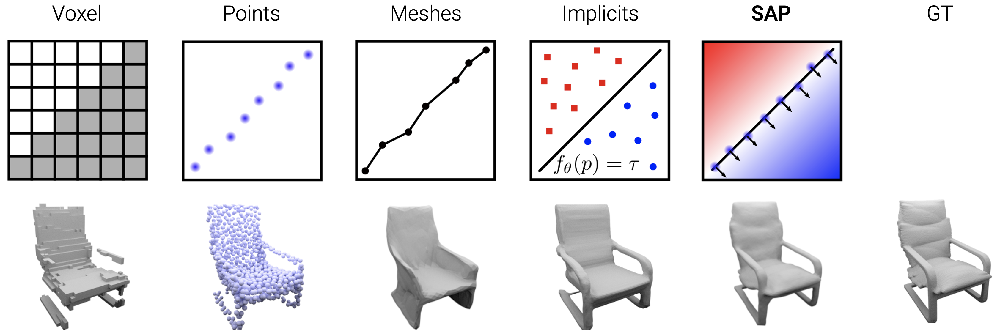
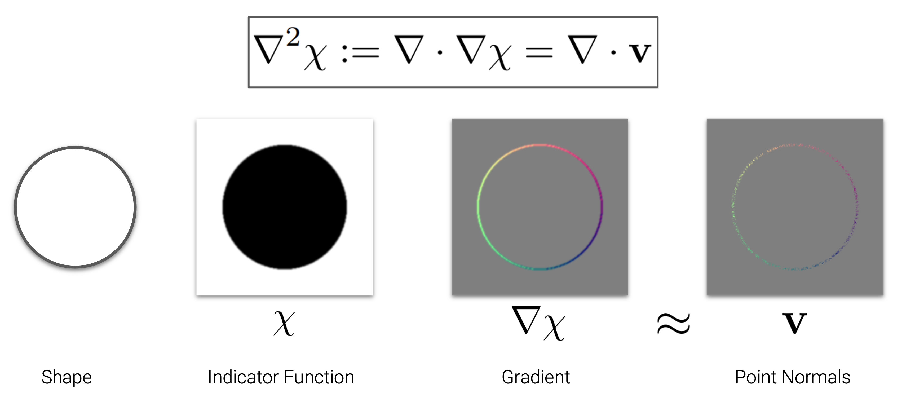
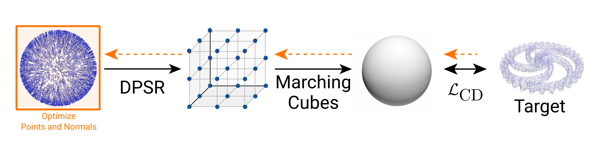

Different Shape Representations

Traditional explicit shape representations (e.g. voxels, point clouds or meshes) are usually very efficient during inference, but all to some extent suffer from discretization.
Neural implicit representations produce smooth and high-quality shapes, but their inference time is typically very slow due to numerous network evaluations in 3D space.
Neural IPS unifies implicit and explicit shape representations. NIPS is interpretable, lightweight, topology agnostic, yields high-quality watertight meshes at low inference times and can be initialized from noisy or incomplete observations.
Poisson Equation

Solving the Poisson equation is the cornerstone of our nips representation. A shape (we use a circle as an example) can be represented as an implicit indicator function. The premise of the Poisson equation is that:
The point normals are an approximation of the gradient of the indicator function.
The research uses spectral methods to solve the Poisson equation. The spetral method is highly optimized on GPUs/TPUs. It is extremely simple and can be implemented with 25-line code.
Applications
Optimization-based 3D Reconstruction
Using NIPS you can have 3D reconstruction from only noisy unoriented point clouds / scans.

Dragon (Real Scan)
Learning-based 3D Reconstruction
You can use nips to learn parameters of a deep neural network. The network can handle large noises and outliers.